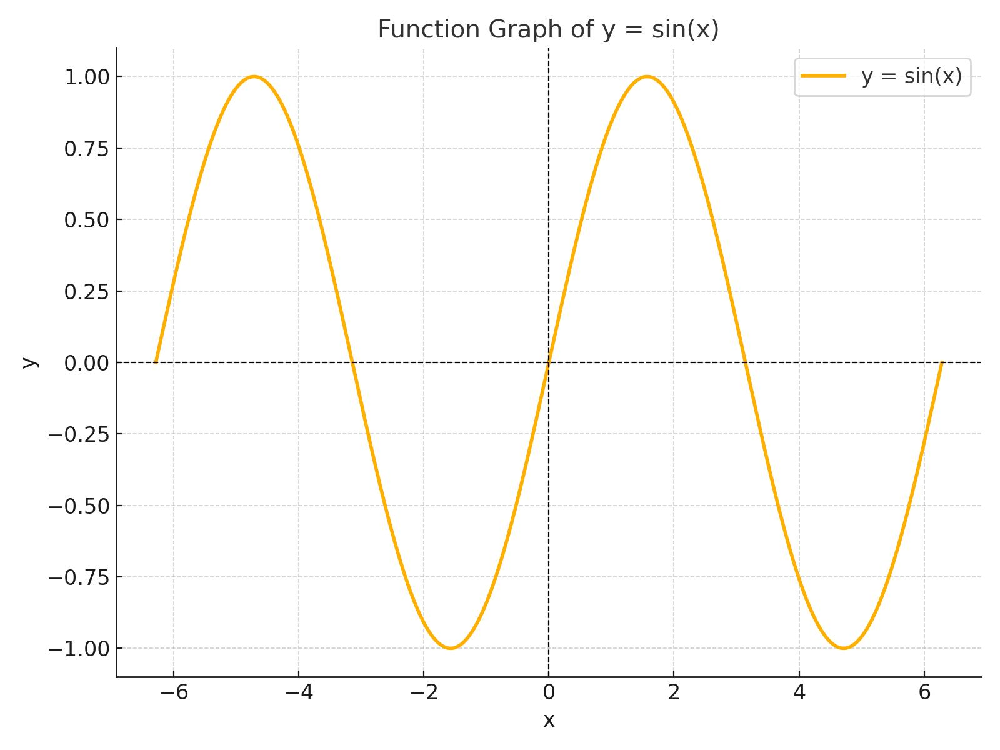

Wave Simulator is an interactive Python application developed using Pygame and Pygame GUI libraries. It allows users to visualize and manipulate wave phenomena in real-time. Users can add multiple waves, adjust their properties such as amplitude, frequency, speed, and phase, and observe the resulting interference patterns, including constructive and destructive interference.
View Details
The Function Plotter is a versatile Python-based application designed to visualize mathematical functions. Utilizing powerful libraries such as Tkinter for the graphical user interface, Matplotlib for plotting, SymPy for symbolic mathematics, and ttkbootstrap for enhanced UI styling, this tool offers a comprehensive solution for students and educators, to explore and analyze mathematical expressions interactively.
View Details